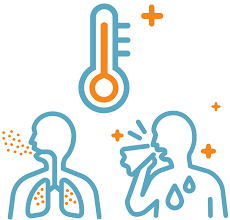

Como se transmite
Los coronavirus humanos se transmiten de una persona infectada a otras:
*A través de las gotículas que expulsa un enfermo al toser y estornudar
*Al tocar o estrechar la mano de una persona enferma,
*Un objeto o superficie contaminada con el virus y luego llevarse las manos sucias a boca, nariz u ojos.
